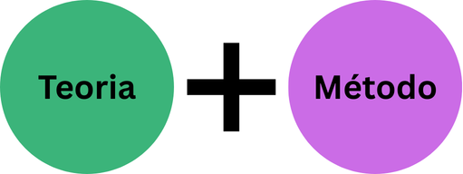
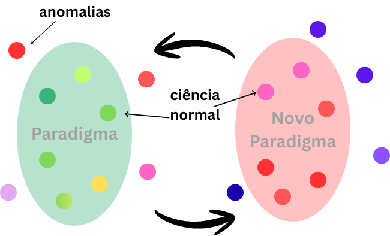

Fundamentos e Paradigmas Científicos
Abertura
- Boas-vindas ao curso.
- O Encontro 1 foca na Filosofia da Ciência.
- Objetivo: Compreender como o conhecimento é construído e validado.
- A ciência não é apenas técnica, mas fundamentada em protocolos e linguagem.
A mais antiga busca da Humanidade
Conhecer a verdade e a realidade
Emprego de diversos métodos
A ciência é um método

A Jornada Científica
- Iniciar na pesquisa exige compreender procedimentos essenciais
- Necessidade de assimilar requisitos técnicos e teóricos
- Ter discernimento para superar obstáculos complexos ao longo do percurso

O que é Ciência? (Etimologia)
- Vem do latim scientia: significa conhecimento ou sabedoria
- Baseia-se em um corpo de princípios e teorias organizadas
- É uma construção metódica e sistemática sobre um objeto de estudo

Ciência como Especialização
Refinamento de potenciais comuns a todos
“Hipertrofia de capacidades que todos têm” (Rubem Alves)
Tendência à especialização: conhecer cada vez mais de cada vez menos
Ciência vs. Senso Comum
Senso Comun
- O senso comum é o conhecimento adquirido no convívio social (família, amigos, rua)
- Senso Comum: Formado por sentimentos, desejos, crenças e misticismo
Ciência
- Ciência: Formada através da “razão-pura” e de forma metodologicamente rigorosa
- A ciência busca excluir emoções e crenças religiosas do contexto investigativo
Ambos buscam compreender o mundo para a sobrevivência e bem-estar
A reificação do método
- O método definie ciência
- Oferece uma dimensão pública, coletiva e sistemática
- Precisão, replicação, objetividade

Ciência como fenômeno social
- Rede de trocas e interpretações entre pesquisadores
- Iniciar uma pesquisa é “entrar em uma conversa que já dura algum tempo”
- Exige domínio da linguagem do campo e das referências principais

Ciência: Um campo de batalha

A Natureza Provisória do Conhecimento
- Declarações científicas não (deveriam) reivindicam certeza absoluta
- Baseiam-se na “melhor” evidência presente para determinar o que é mais provável
- O conhecimento é provisório e cercado por graus de incerteza

Por uma atitude científica
- Abertura às críticas
- Busca por explicações que se aproximem da realidade das pessoas
- O método é o caminho para o sucesso na elaboração de teorias
Fim da parte I
Dimensões do Desenho de Pesquisa
Dimensão Teórica: Qual o campo teórico de sua pesquisa?
Dimensão Prática: Procedimentos, coleta e análise de dados
O desenho deve convencer uma audiência de céticos sobre a segurança das conclusões


O Papel do Paradigma Científico
- Fornece o conjunto de teorias e diretrizes
- Define o que é racional e possível investigar cientificamente
- Condiciona as formas de saber, muitas vezes de forma inconsciente


Bases Epistemológicas e Ontológicas
- Toda metodologia está vinculada a pressupostos
- As respostas a questões ontológicas e epistemológicas determinam o método
- Afetam pesquisadores experientes e neófitos
O que é Ontologia?
- Teoria sobre a natureza ou essência do fenômeno investigado (Metafísica)
- Questiona: O que existe? Qual a natureza do objeto?
- Na pesquisa qualitativa, foca em múltiplas realidades socialmente construídas
O que é Epistemologia?
- Conhecida como “Teoria do Conhecimento”
- Trata da natureza e das formas de como o conhecimento é adquirido
- Questiona como o saber pode ser comunicado a outros seres humanos (razão)
A questão axiológica
- Trata do papel dos valores na pesquisa .
- Reconhece que a pesquisa é influenciada por tradições e ambientes
- O pesquisador deve discutir abertamente os valores que determinam sua narrativa
Fragmentação
| Argumentos Negativos | Argumentos Positivos |
|---|---|
| Efeito de Borda: A fragmentação aumenta a exposição ao vento e calor, degradando o microclima e prejudicando espécies especialistas do interior da mata. | Heterogeneidade de Hábitat: A criação de bordas e diferentes manchas pode aumentar a diversidade gama, permitindo que espécies com nichos distintos ocupem a mesma região. |
| Isolamento Populacional: Impede o fluxo gênico entre populações, aumentando a endogamia e o risco de extinção por perda de variabilidade genética. | Barreira Contra Patógenos: Fragmentos isolados podem atuar como uma “quarentena natural”, impedindo a propagação rápida de doenças ou pragas por toda a paisagem. |
| Perda de Espécies de Área Ampla: Grandes predadores e herbívoros não conseguem sobreviver em áreas reduzidas, causando desequilíbrios em toda a teia alimentar. | Trampolins Ecológicos (Stepping Stones): Pequenos fragmentos funcionam como pontos de parada cruciais para aves e insetos migratórios cruzarem matrizes urbanas ou agrícolas. |
| Invasão de Espécies Exóticas: Áreas fragmentadas são mais vulneráveis à entrada de competidores generalistas e predadores domésticos que dizimam a fauna nativa. | Estímulo à Especiação: O isolamento geográfico prolongado em fragmentos pode, sob certas condições evolutivas, levar à formação de novas subespécies adaptadas a nichos locais. |
Naturalismo vs. Construtivismo
- Dois extremos que surgem das respostas às questões metateóricas
- Posições intermediárias matizam as críticas de cada extremo
- Importância da coerência interna entre posição filosófica e escolha metodológica
Pressupostos do Naturalismo
- O mundo é real e consiste em entidades particulares individuais
- Esses componentes interagem de forma regular e padronizada
- Humanos experimentam essas interações através da percepção sensorial
Epistemologia e Ontologia Naturalista
- Ontologia: Realidade formada por unidades atomizadas que existem independente do observador
- Epistemologia: Conhecimento acumulado a posteriori sobre associações
- Metodologia: Busca identificar regularidades do mundo real
Pressupostos do Construtivismo
- Duvida da existência de regularidades sociais similares às naturais
- Percepções humanas reconstroem a realidade social por meio de significados
- Fenômenos sociais e históricos são produções coletivas
Epistemologia e Ontologia Construtivista
- Ontologia: Múltiplas realidades e significados dependentes do olhar do investigador
- Epistemologia: Visão do conhecimento como pessoal, subjetivo e único
- Exige envolvimento e interdependência entre pesquisador e participantes
Então, não há “objetividade na ciência”?
Objetividade e Distanciamento
- Extremo 1: Observador perfeitamente distante e observações objetivas
- Extremo 2: Distanciamento impossível; o observador está imerso no mundo social
Subjetividades
O mundo depende apenas de ações objetivas ou de significados humanos?
Teorias variam no grau de importância atribuído a essa característica

O realismo na ciência
- O projeto depende da construção teórica e da relação entre objeto e mundo
- O pesquisador deve conjugar dimensões empírica e teórica

O Pragmatismo
- Rejeita a ideia de um “mundo real” acessível por um único método científico
- Comprometimento com a incerteza: conhecimento é relativo e transitório
- O importante é se a pesquisa contribui para encontrar o que o pesquisador quer saber
Thomas Kuhn e a Ciência Normal
- Ciência Normal: baseada em regras e práticas consensuais
- Fase em que pressupostos de uma disciplina funcionam para todos os cientistas
- O paradigma define o que é racional investigar
 {.width=90%}
{.width=90%}
Anomalias e Crise
- Anomalias: Ocorrências que não podem ser explicadas pelo paradigma vigente
- Acúmulo de anomalias gera a fase de “pesquisa extraordinária”
- Começa a pesar contra o paradigma atual, gerando instabilidade

Revoluções Científicas
- O conhecimento não é linear, mas ocorre por “mudanças de paradigma”
- Adoção de um novo paradigma atrai seguidores e enfrenta resistência
- O triunfo de uma nova verdade é uma revolução
Dialética das revoluções científicas
- O novo paradigma torna-se dominante e é tratado como “normal”
- Manuais didáticos passam a ensiná-lo, obscurecendo o processo revolucionário
- O paradigma é um fenômeno emergente de fatores sociais e científicos
O que aconteceria se o negacionismo científico tivesse triunfado durante o COVID?
Programas de pesquisa
- Hipóteses Centrais: Pressupostos teóricos que sustentam o programa (não testáveis diretamente)
- Cinturão Protetor: Hipóteses auxiliares passíveis de refutação e descarte

Em spintese…
- Ontologia e Epistemologia alicerçam as teorias
- Teorias guiam os métodos de análise e tipos de explicação
- Esse conjunto completo conduz à metodologia e ao desenho de pesquisa final
Conclusão
- A filosofia da ciência não é apenas debate abstrato; ela molda a prática
- Compreender paradigmas evita a acomodação em modelos insustentáveis